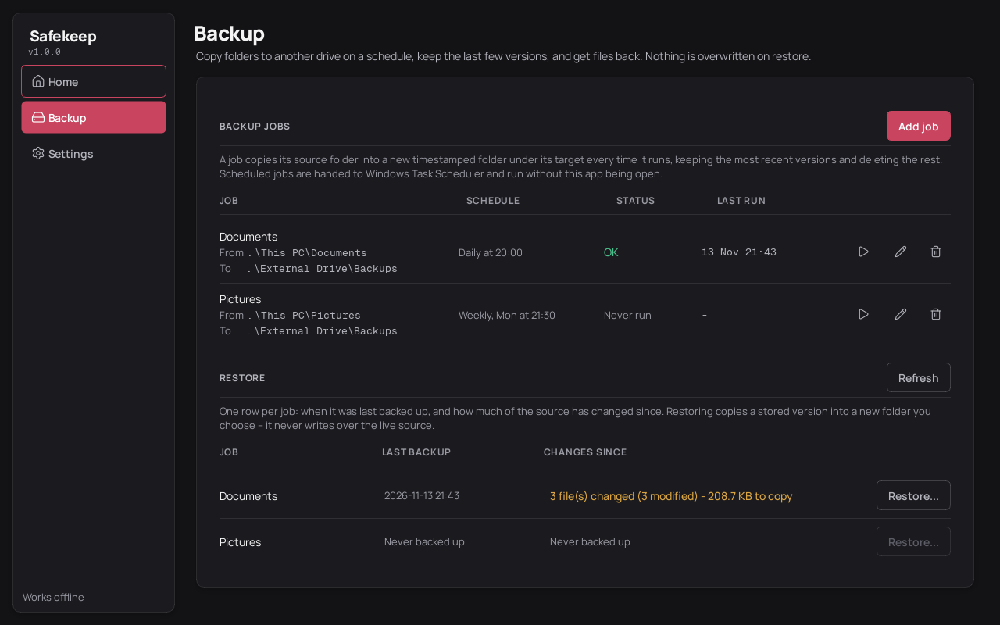

Safekeep: Backup That Checks Its Own Work
Purpose & Motivation
I wanted one tool that copies my folders to another drive on a schedule and, more importantly, can show that the copy is good. It started as a multi-tool desktop app: batch image processing, file renaming, disk cleanup. I cut it back to a single job, backup, because backup is the one place where "it looks fine" can cost you your files.
The Constraint That Shaped Everything
A backup tool has one rule: a failure must never cost you the last good copy. Every design choice below follows from it. A backup that reports success has to be checked, the old versions are the only thing deleted so that step comes last, and the settings that say what to back up cannot be allowed to vanish because one write went wrong.

The Backup screen with two sample jobs. Sample folders, not real data.
Implementation & Technical Considerations
A backup job points a source folder at a target folder. Each run copies the source into a timestamped folder, hashing every file with SHA-256 as it is copied, and writes a manifest of those hashes next to it. The new folder is only renamed into place after every copied file has been re-read from the target and matched against its hash. Each version is an ordinary folder you can open without the app.
Before anything is written, the run checks that the source is not empty, that the target is not inside the source, that there is room for the copy plus a margin, and that the target is the same drive as last time, so an unplugged drive cannot silently send a backup to a plain folder on C:. The jobs file is written atomically and keeps a backup copy, and a damaged file is reported with a restore option instead of being read as "no jobs". Schedules are handed to Windows Task Scheduler so backups run when the app is closed, and a restore copies into a new folder and never overwrites the live source.
A run that fails keeps the last good backup. If the backup drive fills up or drops out, or the source disappears part-way through, the run stops with the real reason, promotes nothing and prunes nothing. A second run of the same job is refused while one is running, and older leftovers from failed runs are swept after a week.
Testing & Reliability
There are 290 automated tests, and each safety rule was proven by making it fail first: corrupting one byte of a copy mid-run, truncating the jobs file mid-write, starting two backups in the same second. Independent reviews kept finding real bugs after the tests were green. The worst: with the backup drive full, or the source disappearing mid-copy, a run could report success and prune the only complete backup. I reproduced both, fixed them, and wrote tests that fail on the old code. A later review then found a copy of zero files that slipped through the same gap, and fixed that too.
What is not covered: the interface has no automated tests (I drove the real app headless instead), and it has not been run on a Mac. Verification also costs time. On my machine a 300 MB backup of 3,000 files went from about 3.5 seconds to about 32, mostly Windows Defender scanning each freshly written file, so verification is now a per-job setting: full, a quick sampled check, or off.
Not Built Yet
Encryption, a simple mode alongside an advanced one, catching up on a missed backup at login, copying paths longer than 260 characters on every Windows setting, and a scheduled re-check of old backups are planned and not in the app today. The macOS scheduler code is written and unit-tested but has never run on a Mac.
| Decision | Why |
|---|---|
| Verify by re-reading the copy, not by trusting the copy call | A copy that returns without an error is not a copy that is right. Re-reading from the target catches faults on the write path. It does not prove the bytes reached the disk, because the operating system may serve the read from its cache, and it cannot catch disk decay later. |
| Never delete an old version until the new one is verified | Pruning is the only destructive step, so it runs last, and it never removes the newest verified version. |
| Keep the manifest beside the version folder, not inside it | The folder stays an ordinary copy you can open without the app, and the changes-since comparison and restore never see a stray file. |
| Stay on Python and PySide6 | I measured it before deciding: hashing runs at about 289 MB/s, but reading and hashing a real folder ran at 6 to 34 MB/s because Windows Defender scans every file it opens. The work waits on the disk, not the language, and the tested engine was worth keeping. |
| Hand the schedule to the operating system | Windows Task Scheduler runs a backup even when the app is closed. When the app was renamed, new tasks were registered first and the old ones removed only after that succeeded. |
Design Approach
The app has a light and a dark theme built from one token file, so no colour is written anywhere else. Colour is used where it carries meaning: green for a good run, amber for files changed since the last backup, red for a failure. During a run the status line says what the app is doing, including "Verifying backup", rather than showing a bare progress bar.